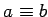

Inhalt Index DeskTop Bronstein

 Algebra und Diskrete Mathematik Elementare Zahlentheorie Kongruenzen und Restklassen
Algebra und Diskrete Mathematik Elementare Zahlentheorie Kongruenzen und Restklassen


| (5.268) |
Die Restklasse ,,a modulo m`` besteht aus allen ganzen Zahlen, die bei Division durch m den gleichen Rest wie a lassen. Es gilt [a]m=[b]m genau dann, wenn  mod m ist.
Zum Modul m gibt es genau m Restklassen, zu deren Beschreibung man in der Regel ihre kleinsten nichtnegativen Repräsentanten verwendet:
| (5.269) |
| (5.270) |
| (5.271) |
eine Restklassenaddition bzw.Restklassenmultiplikation erklärt.
Diese Restklassenoperationen sind unabhängig von der Auswahl der Repräsentanten, d.h., aus
 |
(5.272a) |
folgt
| (5.272b) |
und
| (5.272c) |